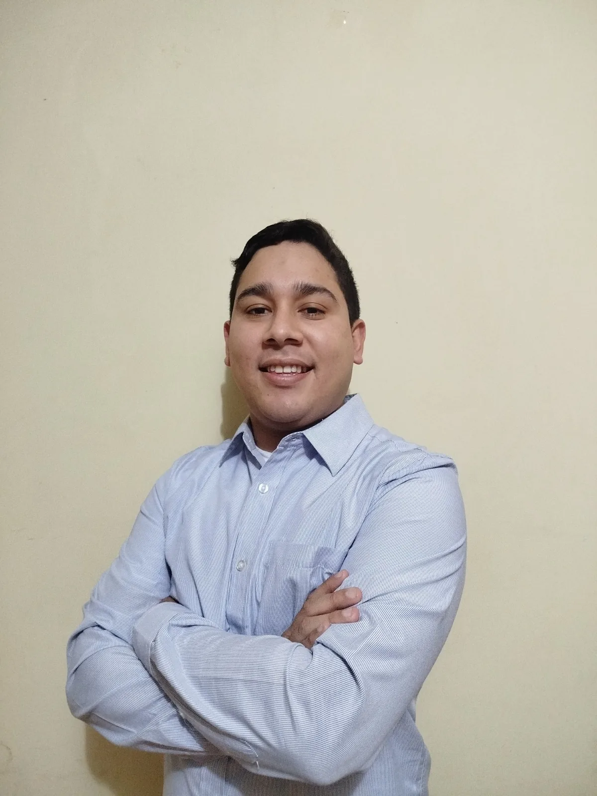
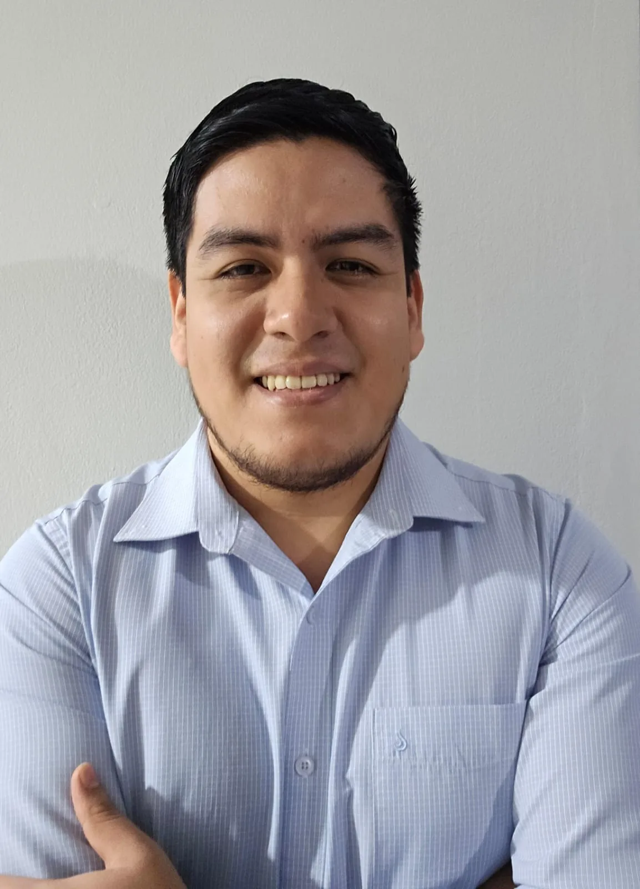
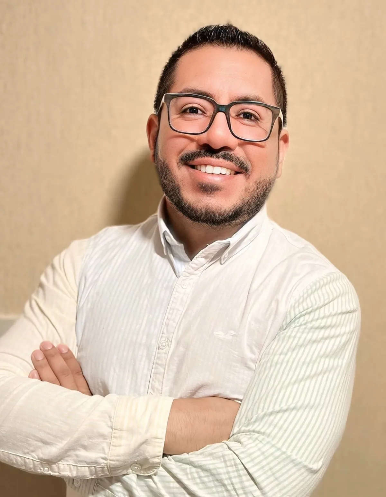
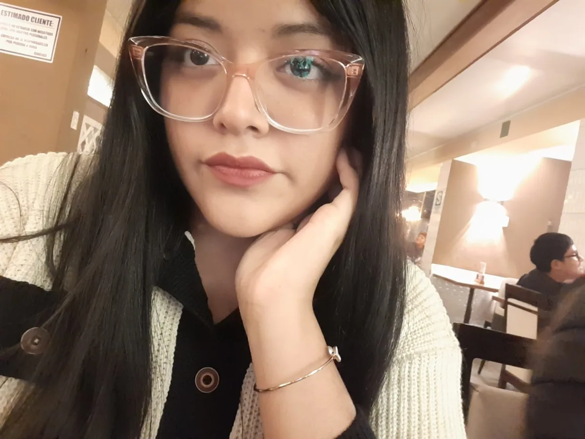
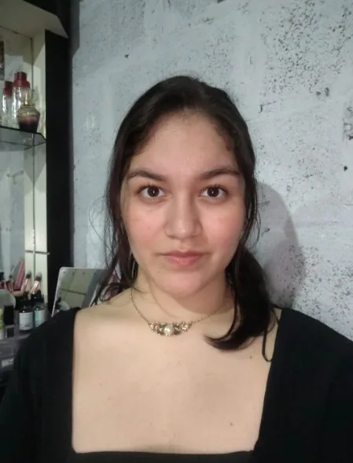
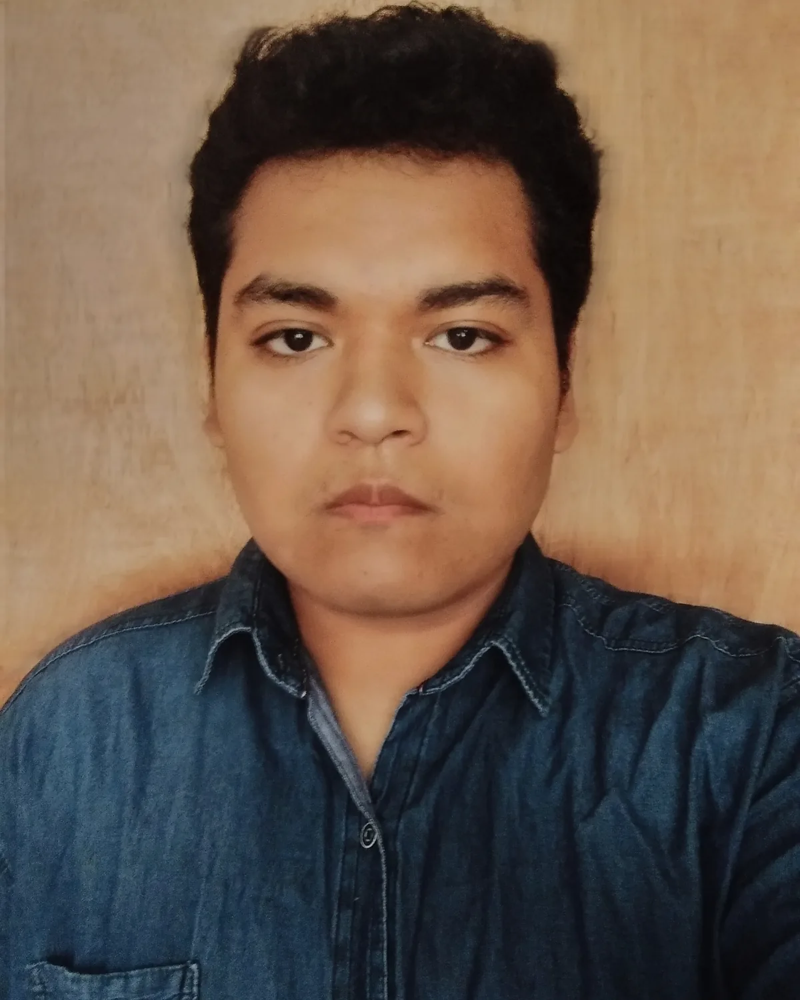
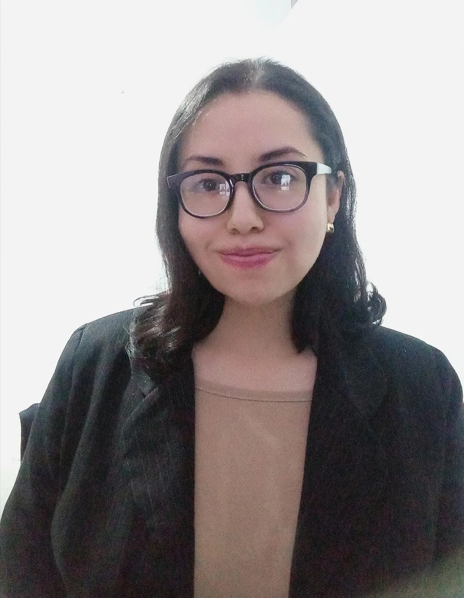

DIRECTOR GENERAL Y FUNDADOR
Juan Ramón Gálvez Cruz
Articula la visión institucional con la educación, la comunidad y el trabajo voluntario.
Nuestro equipo
La dirección, la coordinación y el equipo institucional comparten una misma vocación: aprender, acompañar y servir.

Dirección y fundación

Articula la visión institucional con la educación, la comunidad y el trabajo voluntario.

Acompaña una organización que convierte la solidaridad y la colaboración en acciones compartidas.

Coordinación de proyecto
Acompaña la organización del proyecto y el trabajo del equipo que hace posible cada experiencia educativa.
Equipo institucional 2026
Conoce a parte de las personas que acompañan las actividades y áreas de Sonríe Corazón.




Juntando corazones para crear alegría
Conversemos sobre tus intereses y las oportunidades disponibles.